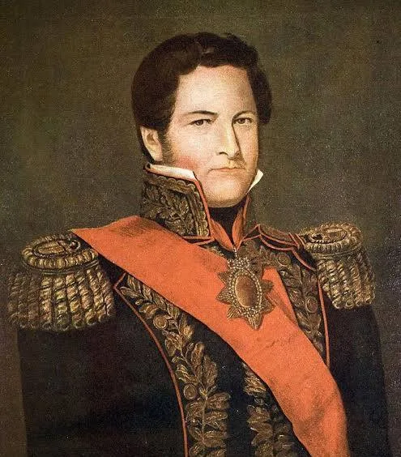
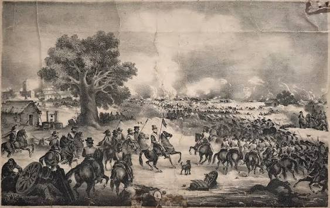

¿Qué son las Efemérides Escolares y por qué son importantes?
Las efemérides escolares son fechas conmemorativas que recuerdan hechos históricos, sociales y culturales relevantes para la construcción de nuestra identidad como argentinos.
Su importancia radica en que nos permiten mantener viva la memoria colectiva, reflexionar sobre nuestro pasado y comprender cómo los acontecimientos del siglo XIX marcaron el presente. En la escuela, sirven para transmitir valores como la soberanía, el federalismo y la libertad.
Este trabajo se centra en la figura de Juan Manuel de Rosas, uno de los caudillos más influyentes y polémicos de la historia argentina, cuya gestión abarcó gran parte del período de organización nacional.
Introducción: La Argentina Post-Independencia
Después de la Declaración de Independencia del 9 de Julio de 1816, las Provincias Unidas del Río de la Plata no lograron organizarse. El país se dividió en dos grandes facciones políticas: los Unitarios, que buscaban un gobierno centralizado en Buenos Aires, y los Federales, que defendían la autonomía de cada provincia.
Este período de guerras civiles duró décadas. Fue en este contexto de inestabilidad donde surgieron los caudillos, líderes con gran poder regional. Juan Manuel de Rosas se convertiría en el más poderoso de todos, logrando 20 años de relativa estabilidad en la Provincia de Buenos Aires.
Línea Histórica de la Argentina 1810-1853
1810
Revolución de Mayo. Inicio del proceso independentista.
1816
Declaración de la Independencia en Tucumán.
1853
Sanción de la Constitución Nacional tras la caída de Rosas.
¿Qué importancia tuvo Rosas en la Historia Argentina?
Juan Manuel de Rosas fue clave porque logró unificar a Buenos Aires y mantenerla separada del resto del país durante 20 años. Defendió la soberanía frente a Francia e Inglaterra y frenó los avances centralistas de los unitarios. Sin embargo, su gobierno también se caracterizó por la represión política a través de la Mazorca. Por eso su figura divide a los historiadores hasta hoy.
Contexto Histórico y Acontecimientos
| Período | Acontecimiento | Importancia en la Actualidad |
|---|---|---|
| 1829-1832 | Primer Gobierno de Rosas | Sentó las bases del poder del caudillo bonaerense. |
| 1835-1852 | Segundo Gobierno con Suma del Poder Público | Período de mayor estabilidad pero también de represión. |
| 1845-1850 | Bloqueo Anglo-Francés | Defensa de la soberanía del Río de la Plata. Se conmemora el 20 de Noviembre. |
Galería de Imágenes


Fuente confiable: Ministerio de Cultura de la Nación